Chapter 18 AI Tester Blueprint
LangGraph Visual Guide
Eleven lessons, from a first graph to a production QA pipeline. Each pairs a real-world example with the exact graph and the code you can run.
LangGraph at a glance
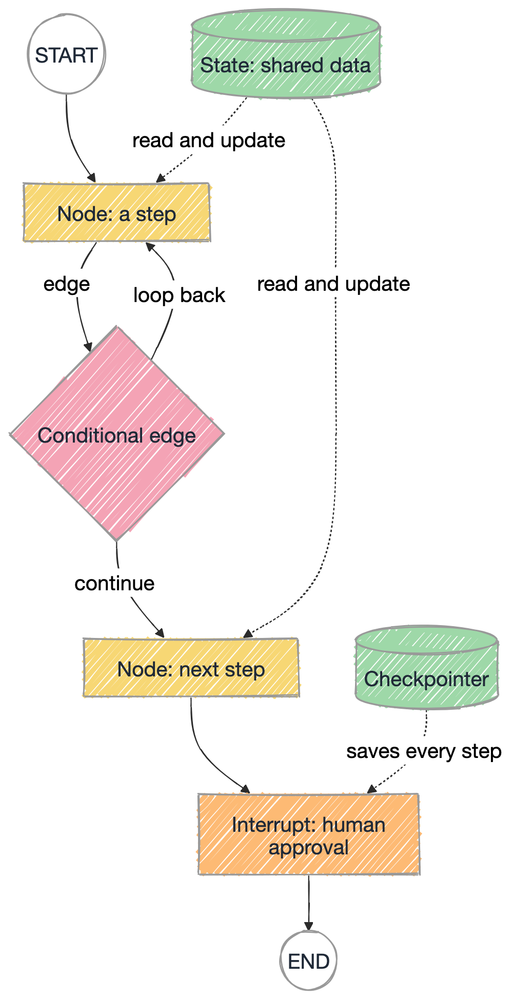
Colour key for every graph
- Node a step
- Conditional edge a decision
- State data and checkpoints
- Interrupt a person approves
- LLM call a model decides
The eleven lessons
-
LESSON 01
Your first graph
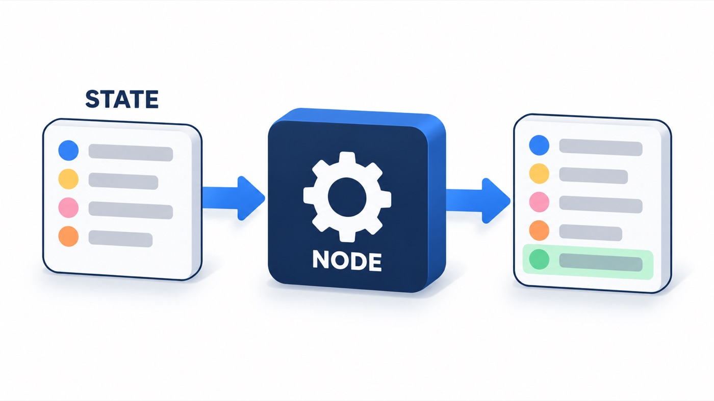
A graph is a set of nodes joined by edges. Every node reads the shared state and returns only what it changed.
No API key needed -
LESSON 02
A sequential pipeline
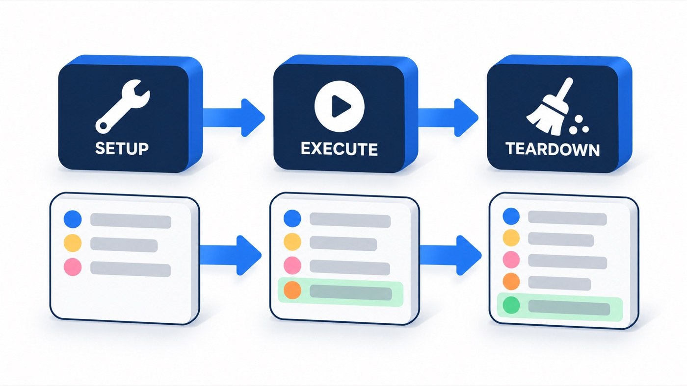
Edges run nodes in order. Each step adds its result to the state, and nothing is lost on the way.
No API key needed -
LESSON 03
Conditional routing
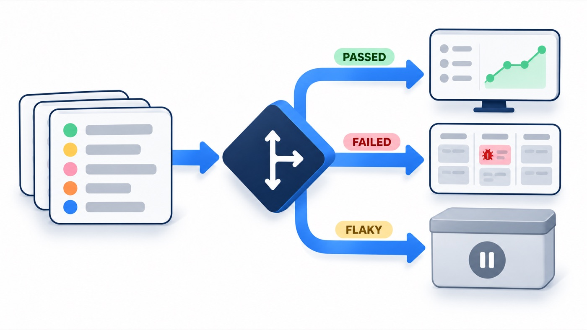
A router function reads the state and returns the name of the next node. Decisions live in that one function.
No API key needed -
LESSON 04
Retries with a limit
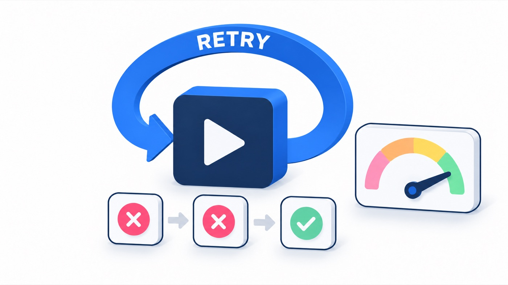
An edge can point back to an earlier node. That makes a loop, and every loop needs a cap.
No API key needed -
LESSON 05
Parallel branches and reducers
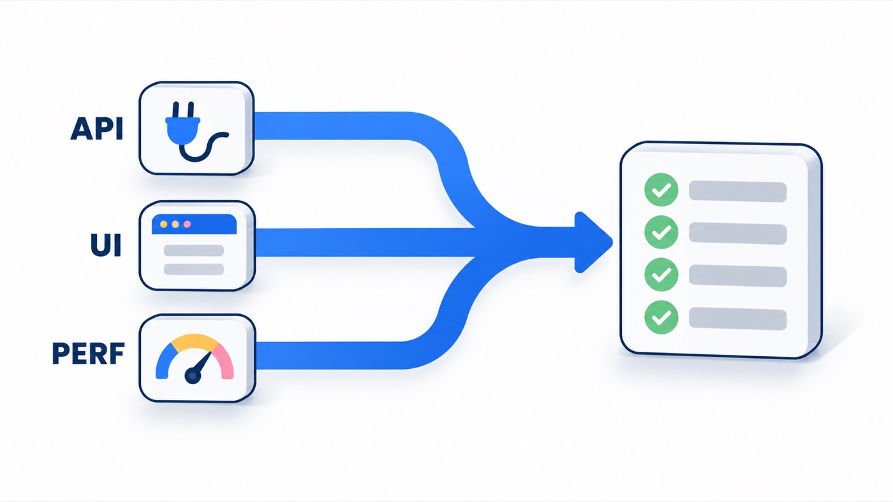
Independent nodes run at the same time. A reducer defines how their results merge into one key.
No API key needed -
LESSON 06
Checkpoints and memory
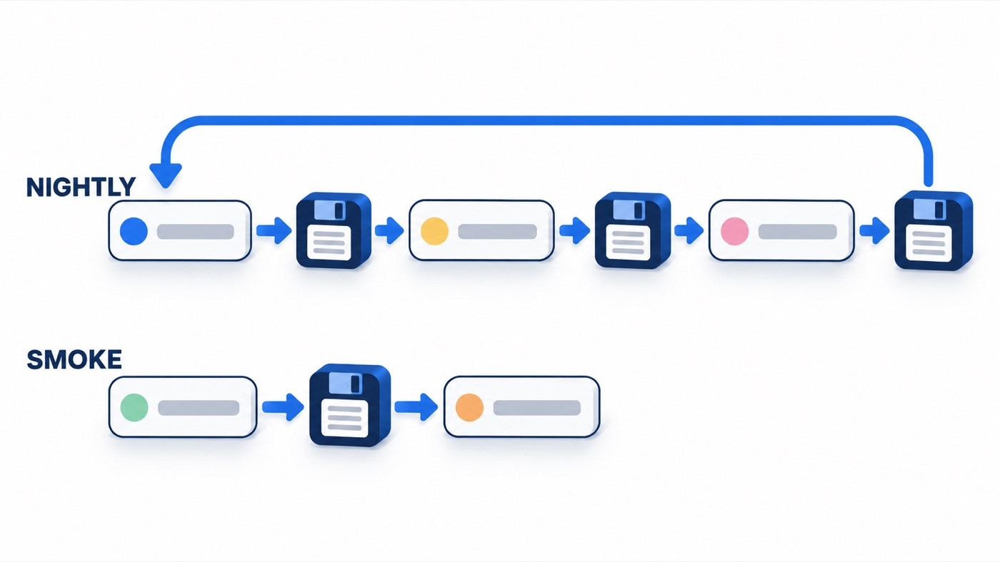
A checkpointer saves the state after every step. Each thread_id keeps its own history.
No API key needed -
LESSON 07
Human approval gates

interrupt() pauses the graph and waits for a person. Command(resume=...) continues it with their answer.
No API key needed -
LESSON 08
An LLM inside a node
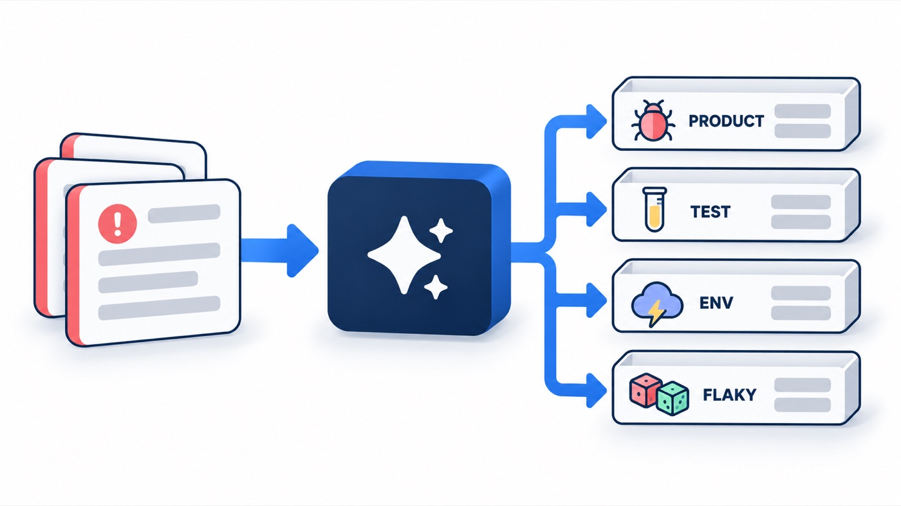
A node can call an LLM. Its structured answer decides which edge the graph takes next.
Needs GROQ_API_KEY -
LESSON 09
The ReAct agent loop
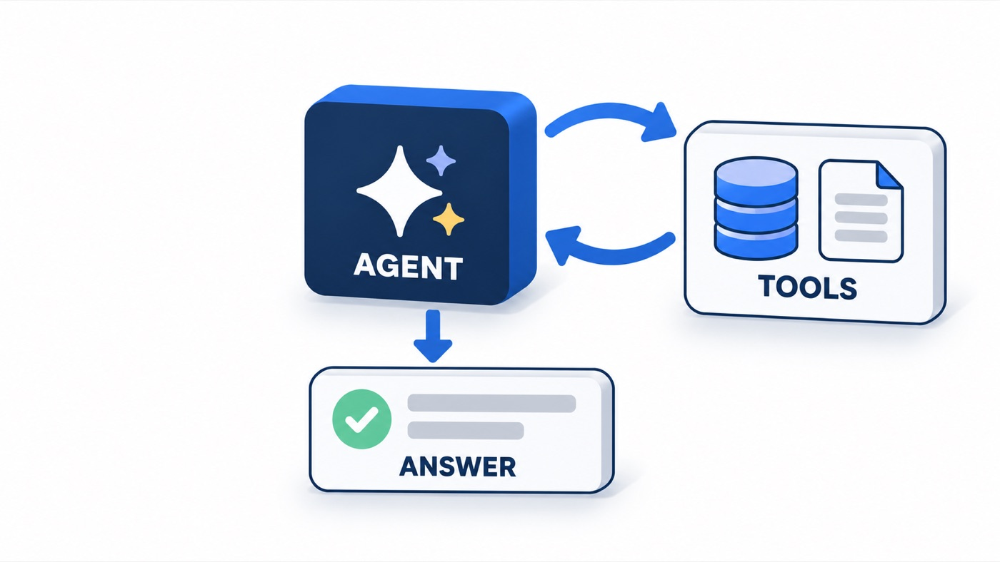
The model reasons, calls a tool, reads the result, and repeats until it can answer.
Needs GROQ_API_KEY -
LESSON 10
Flaky test analyzer
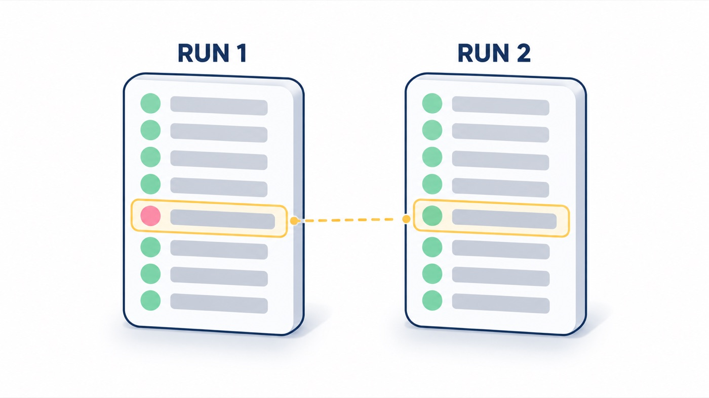
Chapter 5's flaky test finder, rebuilt with a decision, an approval pause and an optional LLM explanation.
API key optional -
LESSON 11 · FINAL PROJECT
From Jira ticket to test report
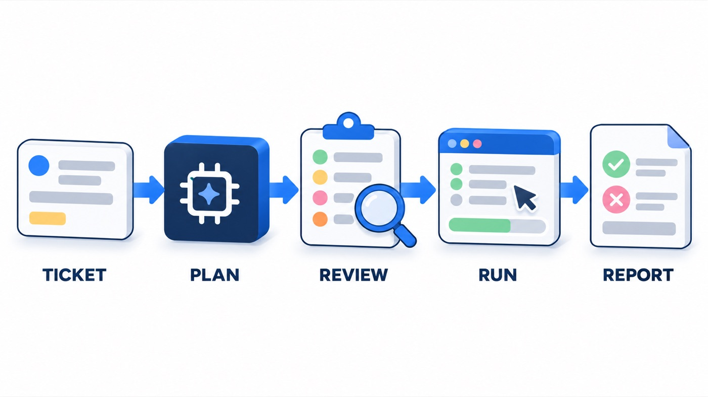
Give it a Jira ticket. It plans the tests, runs them in a browser, and explains what failed and why.
Needs GROQ_API_KEY
Run the scripts
$ cd chapter_18_LangGraph
$ python3 -m venv .venv && .venv/bin/pip install -r requirements.txt
$ source .venv/bin/activate && cd src/chapters
$ python 001_Hello_Graph.py
$ cd ../../capstone && python pipeline.py VWO-105
Lessons 1 to 7 need no API key. For 8, 9 and the capstone, copy .env.sample to .env and add a free Groq key. The capstone also needs pip install -r capstone/requirements.txt and playwright install chromium.